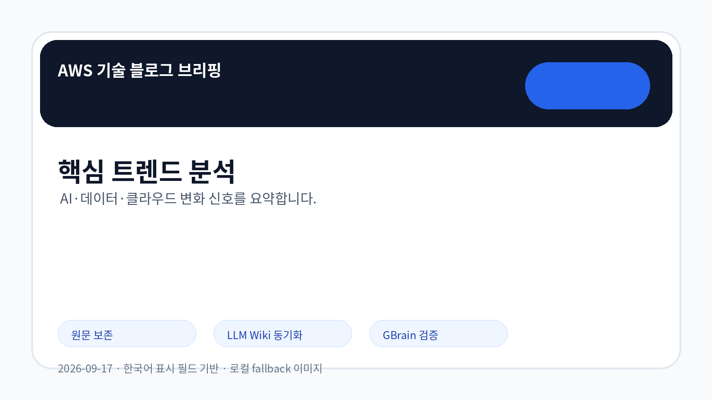
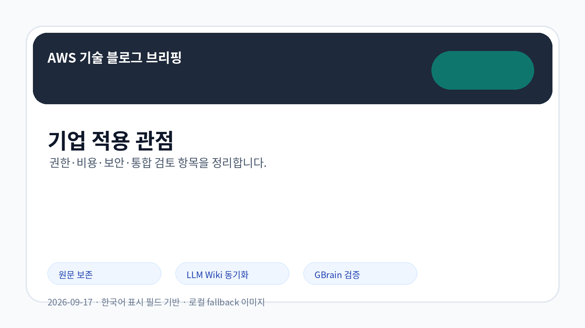
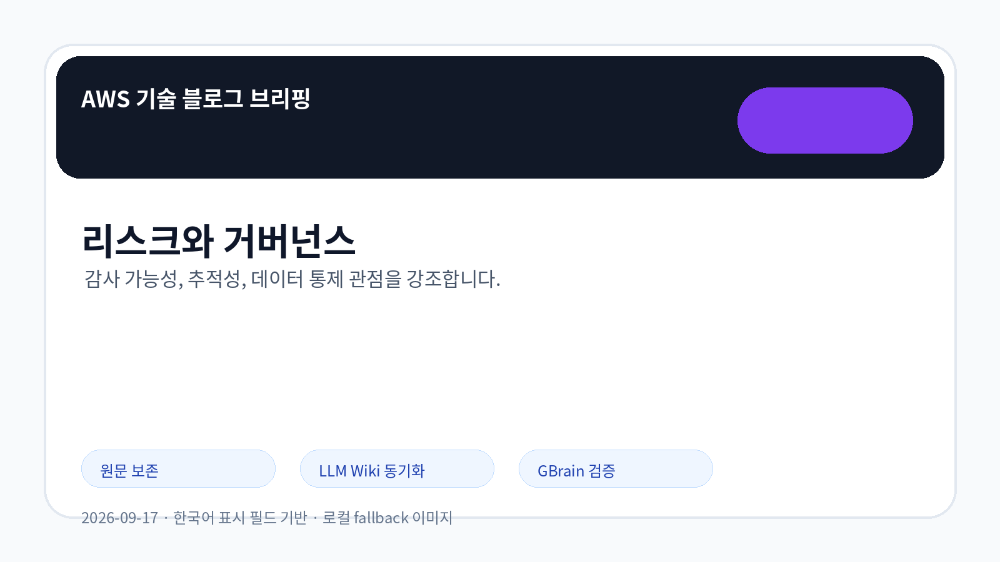

AI/ML
Amazon Bedrock Data Automation 기반 개인정보 비식별 처리 파이프라인 검토
Amazon Bedrock Data Automation을 활용한 서버리스 PII 비식별 처리 흐름이 확인되었습니다. 민감정보 탐지·마스킹 자동화는 데이터 활용 확대와 규제 리스크 완화를 함께 검토해야 하는 주제입니다.
원문 확인AWS 공식 블로그 수집 · LLM Wiki 동기화
이번 실행에서 신규 저장된 AWS 공식 블로그 5건을 원문 보존, LLM Wiki source-summary, GBrain 파일 저장 순서로 처리한 뒤 확인 가능한 시사점만 정리했습니다.

이미지 모드: 로컬 PNG fallback
AWS 공식 RSS 3개에서 오늘 처리 대상 신규 문서 5건을 확인했습니다. 화면에는 영어 원제나 원문 추출 잔여 문구를 노출하지 않고, 별도 한국어 표시 필드로 렌더링했습니다.
Amazon Bedrock, agent skills, PII 비식별 처리처럼 AI 적용 흐름이 서비스·도메인·데이터 보호 단위로 세분화되고 있습니다.
Amazon EKS 기반 분산 학습 사례는 대규모 학습 워크로드에서 장애 복구와 비용 예측 가능성을 함께 검토해야 함을 보여줍니다.
AWS 시작 경험 개편은 초기 도입 장벽을 낮출 수 있으나, 기업 표준 권한·보안 가이드와의 정합성 검토가 필요합니다.

이번 수집 항목은 AI 에이전트 품질, 개인정보 처리 자동화, 분산 학습 안정성, 신규 사용자 경험 개선이라는 서로 다른 층위의 변화를 보여줍니다. 기업 검토자는 기능 발표 여부보다 원문에서 확인되는 적용 조건, 보안 전제, 비용 영향, 기존 시스템과의 연동 범위를 우선 점검해야 합니다.
AI/ML
Amazon Bedrock Data Automation을 활용한 서버리스 PII 비식별 처리 흐름이 확인되었습니다. 민감정보 탐지·마스킹 자동화는 데이터 활용 확대와 규제 리스크 완화를 함께 검토해야 하는 주제입니다.
원문 확인AI/ML
Amazon EKS 환경에서 NVRx를 활용한 분산 학습 내결함성 접근이 확인되었습니다. 대규모 학습 워크로드는 장애 복구, 체크포인트, 클러스터 비용 통제가 함께 검토되어야 합니다.
원문 확인AI/ML
오픈소스 agent skills를 활용해 HCLS 영역의 AI 추론을 개선하는 사례가 확인되었습니다. 도메인별 스킬 구성은 설명 가능성과 재사용성을 높일 수 있지만 검증 데이터와 책임 경계가 필요합니다.
원문 확인AI/ML
Amazon Bedrock AgentCore 맥락에서 에이전트 시스템 프롬프트를 최적화하는 방법이 확인되었습니다. 에이전트 품질은 모델 선택뿐 아니라 지시문 구조, 평가 기준, 변경 관리에 좌우됩니다.
원문 확인AI/ML
AWS가 신규 사용자의 시작 경험을 재구성한 소식이 확인되었습니다. 초기 도입 동선 단순화는 학습 비용과 서비스 탐색 시간을 줄일 수 있지만, 조직 표준 가이드와의 정합성은 별도 점검이 필요합니다.
원문 확인| 기사 | 게시 | 카테고리 | 출처 |
|---|---|---|---|
| Amazon Bedrock Data Automation 기반 개인정보 비식별 처리 파이프라인 검토 | 2026-09-17 | AI/ML | 원문 URL |
| Amazon EKS 기반 분산 학습 내결함성 검토 | 2026-09-17 | AI/ML | 원문 URL |
| 오픈소스 에이전트 스킬을 활용한 AI 추론 개선 사례 | 2026-09-17 | AI/ML | 원문 URL |
| Amazon Bedrock AgentCore로 에이전트 시스템 프롬프트 최적화 검토 | 2026-09-17 | AI/ML | 원문 URL |
| AWS 시작 경험 개편과 초기 도입 동선 변화 | 2026-09-17 | AI/ML | 원문 URL |

| 검토 영역 | 확인 포인트 |
|---|---|
| 데이터 보호 | PII 탐지·마스킹 자동화의 정확도, 예외 처리, 로그 보존 정책을 확인해야 합니다. |
| 에이전트 품질 | 시스템 프롬프트 변경 이력, 평가 기준, 실패 시 책임 경계를 관리해야 합니다. |
| 인프라 안정성 | 분산 학습 장애 복구 방식과 비용 상한 정책을 함께 설계해야 합니다. |
| 관찰된 사실 | 근거 출처 URL | 기업 의사결정 시사점/리스크/기회 |
|---|---|---|
| Amazon Bedrock Data Automation을 활용한 서버리스 PII 비식별 처리 흐름이 확인되었습니다. 민감정보 탐지·마스킹 자동화는 데이터 활용 확대와 규제 리스크 완화를 함께 검토해야 하는 주제입니다. | 근거 URL | 관찰된 사실은 Amazon Bedrock Data Automation 관련 적용 패턴이 구체화되고 있음을 보여줍니다. 근거 출처는 https://aws.amazon.com/blogs/machine-learning/build-a-serverless-pii-redaction-pipeline-with-amazon-bedrock-data-automation/ 입니다. 기업 의사결정자는 데이터 권한, 보안 통제, 비용 영향, 기존 시스템 통합 난이도, 감사 가능성을 원문 기준으로 검토해야 합니다. |
| Amazon EKS 환경에서 NVRx를 활용한 분산 학습 내결함성 접근이 확인되었습니다. 대규모 학습 워크로드는 장애 복구, 체크포인트, 클러스터 비용 통제가 함께 검토되어야 합니다. | 근거 URL | 관찰된 사실은 Amazon EKS 관련 적용 패턴이 구체화되고 있음을 보여줍니다. 근거 출처는 https://aws.amazon.com/blogs/machine-learning/fault-tolerant-distributed-training-on-amazon-eks-using-nvrx/ 입니다. 기업 의사결정자는 데이터 권한, 보안 통제, 비용 영향, 기존 시스템 통합 난이도, 감사 가능성을 원문 기준으로 검토해야 합니다. |
| 오픈소스 agent skills를 활용해 HCLS 영역의 AI 추론을 개선하는 사례가 확인되었습니다. 도메인별 스킬 구성은 설명 가능성과 재사용성을 높일 수 있지만 검증 데이터와 책임 경계가 필요합니다. | 근거 URL | 관찰된 사실은 Amazon Bedrock AgentCore 관련 적용 패턴이 구체화되고 있음을 보여줍니다. 근거 출처는 https://aws.amazon.com/blogs/machine-learning/improving-hcls-ai-reasoning-with-open-source-agent-skills/ 입니다. 기업 의사결정자는 데이터 권한, 보안 통제, 비용 영향, 기존 시스템 통합 난이도, 감사 가능성을 원문 기준으로 검토해야 합니다. |
| Amazon Bedrock AgentCore 맥락에서 에이전트 시스템 프롬프트를 최적화하는 방법이 확인되었습니다. 에이전트 품질은 모델 선택뿐 아니라 지시문 구조, 평가 기준, 변경 관리에 좌우됩니다. | 근거 URL | 관찰된 사실은 Amazon Bedrock AgentCore 관련 적용 패턴이 구체화되고 있음을 보여줍니다. 근거 출처는 https://aws.amazon.com/blogs/machine-learning/optimizing-agent-system-prompts-with-amazon-bedrock-agentcore/ 입니다. 기업 의사결정자는 데이터 권한, 보안 통제, 비용 영향, 기존 시스템 통합 난이도, 감사 가능성을 원문 기준으로 검토해야 합니다. |
| AWS가 신규 사용자의 시작 경험을 재구성한 소식이 확인되었습니다. 초기 도입 동선 단순화는 학습 비용과 서비스 탐색 시간을 줄일 수 있지만, 조직 표준 가이드와의 정합성은 별도 점검이 필요합니다. | 근거 URL | 관찰된 사실은 AWS 관련 적용 패턴이 구체화되고 있음을 보여줍니다. 근거 출처는 https://aws.amazon.com/blogs/aws/aws-reimagines-the-getting-started-experience/ 입니다. 기업 의사결정자는 데이터 권한, 보안 통제, 비용 영향, 기존 시스템 통합 난이도, 감사 가능성을 원문 기준으로 검토해야 합니다. |